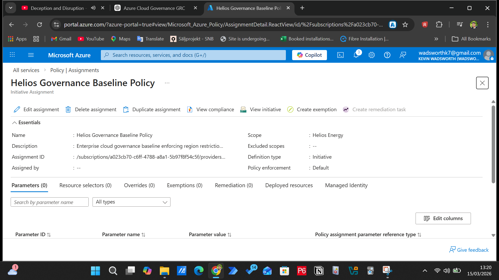
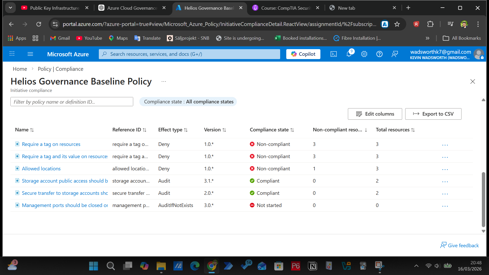
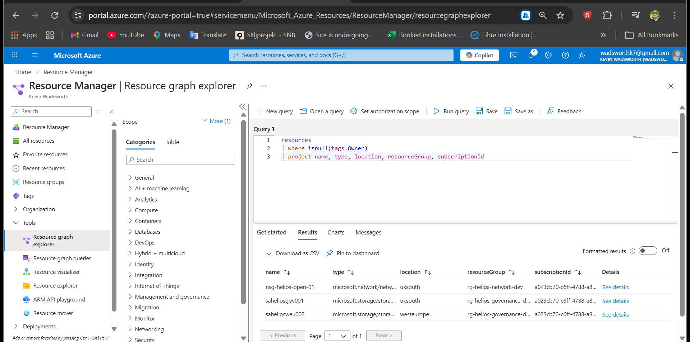
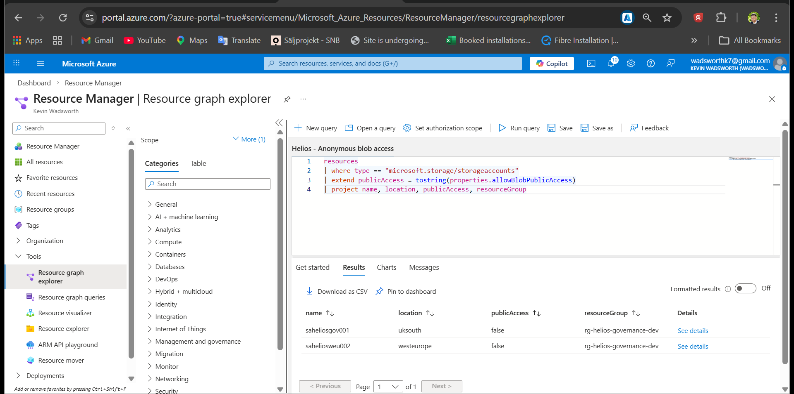
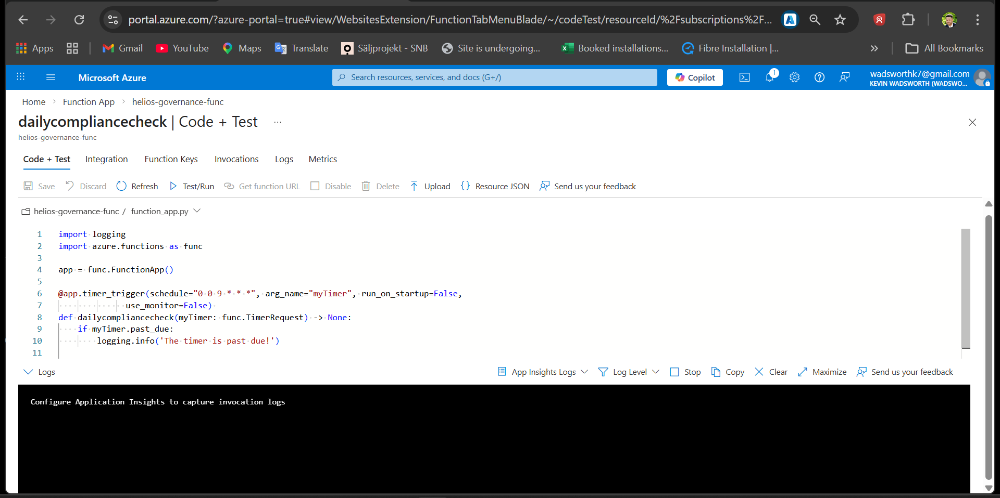
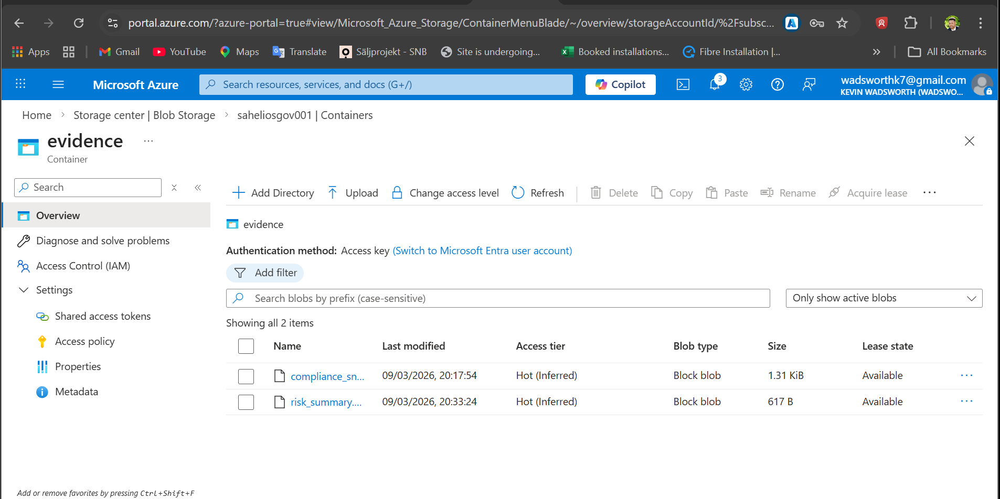
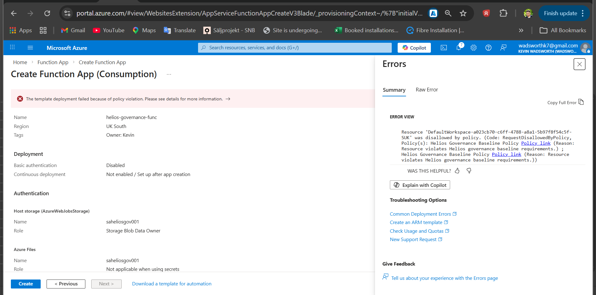

Governance
Azure Policy
Implemented
Azure Policy Initiative assigned
A custom governance baseline was applied to enforce approved regions, mandatory tags and storage security controls.

This page consolidates screenshots showing how the Helios Azure Governance Platform was built,
what risks were detected, what controls were implemented, and how evidence was captured.
View the full GRC case study →
Azure Policy initiative, subscription-level assignment, region controls and mandatory tagging.
A custom governance baseline was applied to enforce approved regions, mandatory tags and storage security controls.

Azure Policy identified non-compliance including missing tags and resources outside approved regions.

Individual resource-level evidence was captured to show exactly which resources breached governance controls.

Resource Graph queries used to detect missing tags, non-approved regions and storage security posture.
Missing ownership metadata was detected to highlight accountability and governance gaps.

Resources outside approved UK regions were identified to demonstrate data residency and regional governance monitoring.

Storage accounts were checked for public blob access to validate exposure risk and data protection posture.

Storage accounts were checked for secure transfer settings to support encrypted traffic requirements.

Azure Functions used to simulate scheduled compliance checks and support ongoing monitoring.
A scheduled Azure Function was created to demonstrate how compliance checks can run automatically.

Function execution and performance were reviewed to confirm the automation was running as expected.

Storage containers and evidence artefacts used to support compliance reporting and audit readiness.
Azure Storage was used to hold compliance snapshots, reports and risk summaries.

Containers were created for compliance reports, evidence files and AI governance assessments.

Real-world deployment challenges caused by policy enforcement, quota limits and monitored resource dependencies.
Strict tagging controls blocked Azure from creating dependent resources that did not meet governance requirements.

Function App deployment was impacted by policy dependencies and regional quota constraints during implementation.